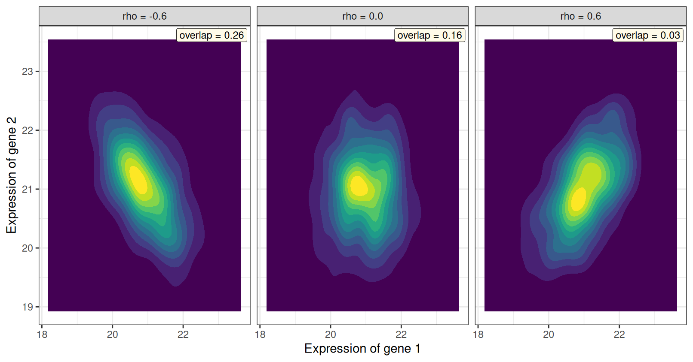
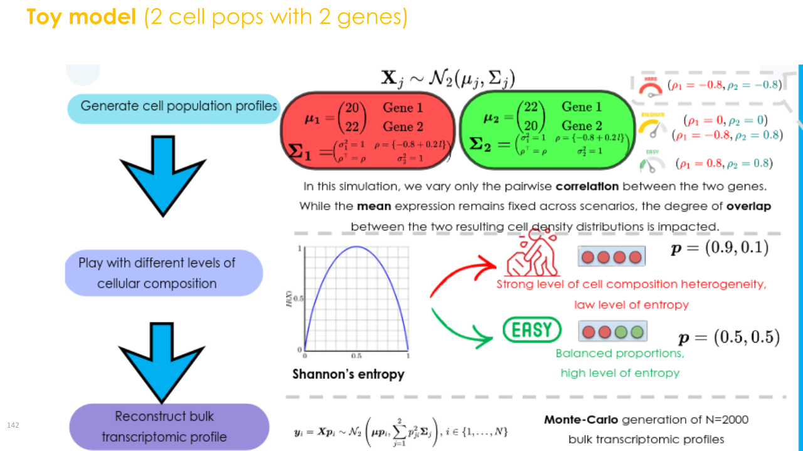
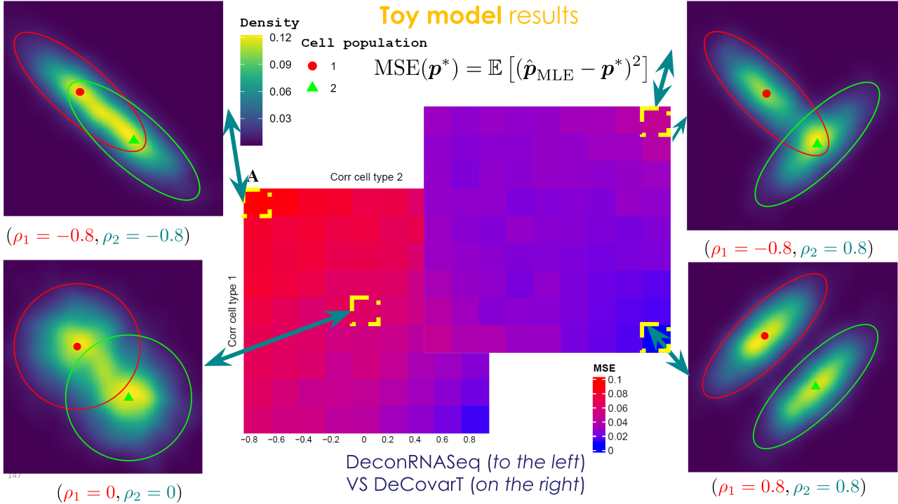
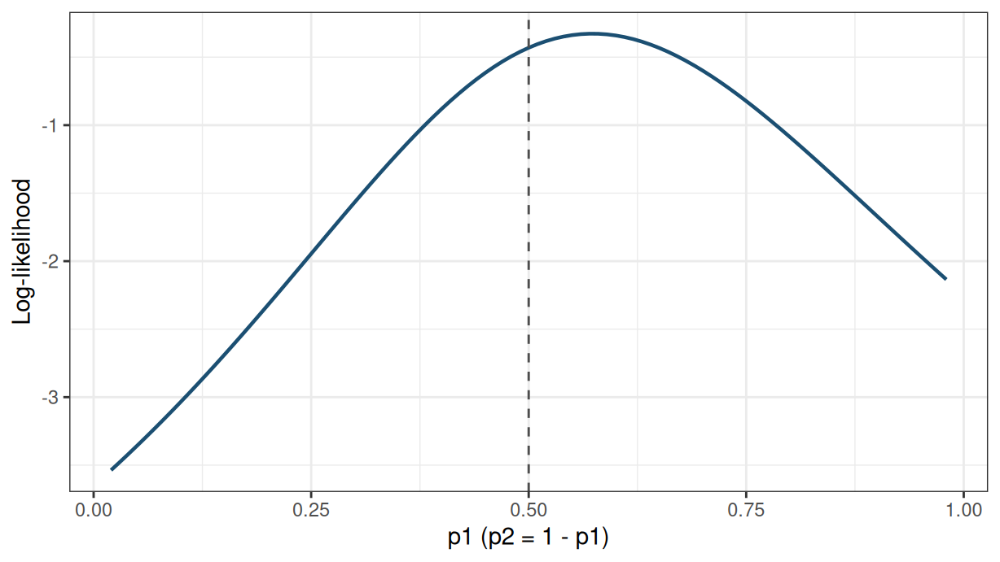
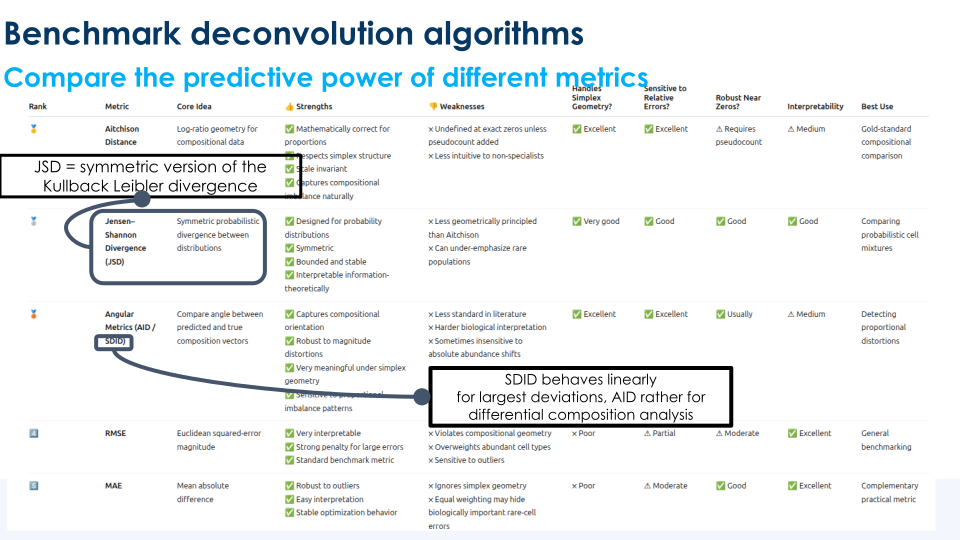
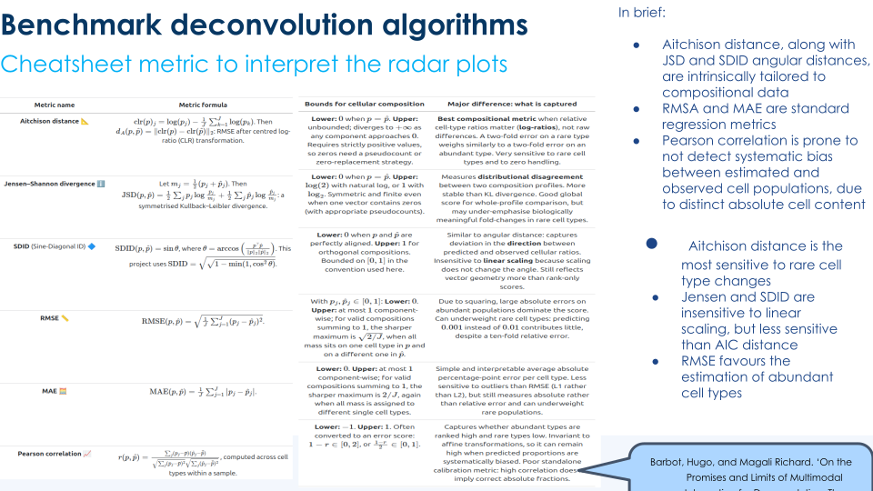
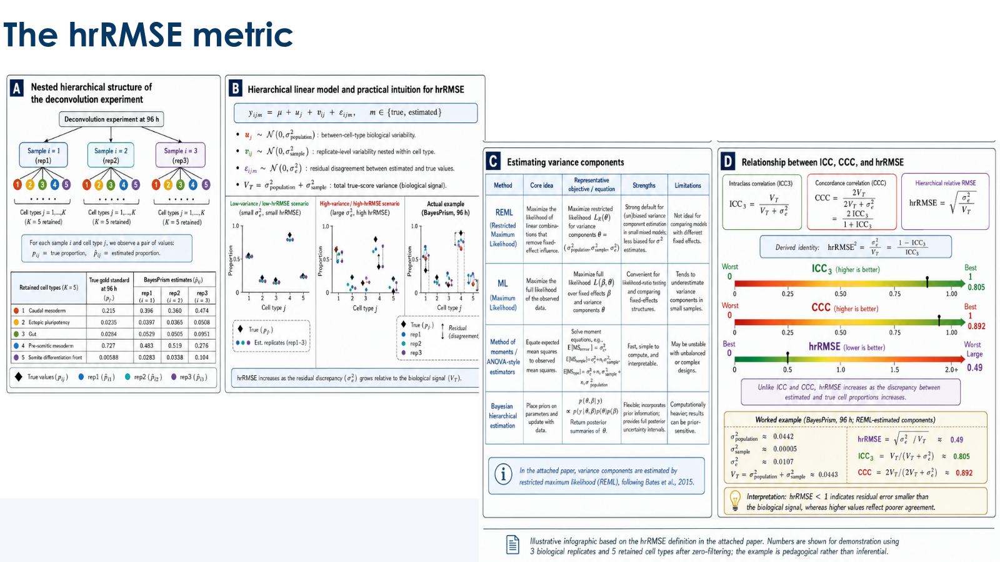

compute_average_overlap()).
2026-08-31
Source:vignettes/DeCovarT-manuscript-scenarios.qmd
This vignette documents the synthetic scenarios that enter the methods paper: a bivariate Gaussian-convolution toy (G=2, J=2) that isolates gene–gene correlation, and a high-dimensional hybrid reference (G=50, J=3) in which two cell types are mean-collinear and must be separated by network topology.
run_simulation_benchmark() wraps simulate_bulk_mixture(), deconvolute_ratios(), and compute_benchmark_metrics(). Generative grids (proportions, correlation sweeps, mean signatures, covariance tensors) should be assembled in scripts—see scripts/configure_bivariate_toy_scenarios.R for the bivariate toy study—and passed as a tibble with a true_theta list column. Deconvolution solvers are supplied as a named list of FUN plus optional additional_parameters for do.call(). Optional scenario-level parallelism uses furrr and future (Suggests), capped by default at half of detected cores, with per-sample parallelism disabled inside deconvolute_ratios() to avoid nested workers.
The manuscript study is implemented by run_simulation_benchmark(), with scenario grids built in scripts/configure_bivariate_toy_scenarios.R. Even when mean profiles are similar, gene–gene correlation can degrade mean-only solvers, and is partly recovered once \boldsymbol{\Sigma}(\boldsymbol{p})=\sum_j p_j^2\boldsymbol{\Sigma}_j enters the likelihood.
With p_1+p_2=1, only one free ALR coordinate is estimated (see derivatives under simplex transforms). Figure 1 combines the factorial design with a gene-space density at fixed means, variances, and \boldsymbol{p}.



compute_average_overlap()).
For J=2 the free coordinate is p_1\in(0,1). The chunk below evaluates \ell_{\boldsymbol{y}\mid\boldsymbol{\zeta}}(p_1,1-p_1) on one bulk draw and, when plotly is installed, renders an interactive line.

plotly).
library(DeCovarT)
source("scripts/configure_bivariate_toy_scenarios.R")
deconvolution_functions <- bivariate_toy_deconvolution_functions(
itmax = 200L,
epsilon = 1e-4
)
scenario_config <- build_bivariate_scenario_config(
proportions = list(
"balanced" = c(0.5, 0.5),
"highly unbalanced" = c(0.95, 0.05)
),
signature_matrices = list(
"small CLD" = matrix(c(20, 22, 22, 20), nrow = 2),
"large CLD" = matrix(c(20, 40, 40, 20), nrow = 2)
),
corr_sequence = seq(-0.8, 0.8, by = 0.2),
diagonal_terms = list("homoscedastic" = c(1, 1))
)
bivariate <- run_simulation_benchmark(
scenario_config = scenario_config,
deconvolution_functions = deconvolution_functions,
n = 500,
cores = 1,
parallel_scenarios = FALSE
)config stores Shannon entropy of \boldsymbol{p} and MixSim overlap; simulations stores per-sample \hat{\boldsymbol{p}} and compute_benchmark_metrics(). The article compares DeCovarT with DeconRNASeq / NNLS (Gong and Szustakowski 2013).
scripts/generate_random_markov_network.R (seed 20260807) builds one G=50, J=3 reference that mean-only methods cannot fully resolve: types 1 and 2 share a high local cosine on 30 genes and differ only through \boldsymbol{\Omega}; type 3 has a compact marker block; 10 genes are a null (equal_all) block.
\underbrace{\mathcal{G}_{12}}_{30\text{ genes}} \ \cup\ \underbrace{\mathcal{G}_{3}}_{10\text{ genes}} \ \cup\ \underbrace{\mathcal{G}_{\mathrm{eq}}}_{10\text{ genes}}, \qquad \boldsymbol{\Omega}_j = \mathrm{blockdiag}\bigl( \boldsymbol{\Omega}_j^{(\mathcal{G}_{12})},\, \boldsymbol{\Omega}_j^{(\mathcal{G}_{3})},\, \boldsymbol{\Omega}_j^{(\mathcal{G}_{\mathrm{eq}})} \bigr).
\boldsymbol{\mu} uses two calls to generate_mean_signature_matrix() (mean signature construction): \rho_{12}=0.95 on \mathcal{G}_{12}, then \rho_{3}=0.05 on a marker pool for type 3. Local topologies follow the BLGGM two-scale pattern (Table 1; GGM networks).
| Gene block | # genes | Cell type 1 | Cell type 2 | Cell type 3 |
|---|---|---|---|---|
shared_12_vs_3 |
30 | SBM (hub-like modules) | star (one driver) | Erdős–Rényi |
marker_3 |
10 | Erdős–Rényi | Erdős–Rényi | scale-free |
equal_all |
10 | Erdős–Rényi | Erdős–Rényi | Erdős–Rényi |
| pair | cosine | Euclidean |
|---|---|---|
| celltype_1 vs celltype_2 | 0.973 | 2.765 |
| celltype_1 vs celltype_3 | 0.562 | 11.219 |
| celltype_2 vs celltype_3 | 0.562 | 11.219 |
| cell type | topology | \lambda_{\min} | \lambda_{\max} | \kappa(\Omega) | prop. inhib. |
|---|---|---|---|---|---|
| celltype_1 | SBM | 0.100 | 1.685 | 16.846 | 0.500 |
| celltype_2 | star | 0.100 | 3.331 | 33.311 | 0.489 |
| celltype_3 | scale-free | 0.100 | 2.096 | 20.961 | 0.500 |
Types 1 and 2 remain near-collinear on the full G=50 vector (cosine \approx 0.97). Type 3 is only moderately separated (cosine \approx 0.56) because the shared \mathcal{G}_{12} baseline and the flat equal_all block inflate every pairwise inner product—the finite-J cosine bias of asymptotic cosine control. Table 3 shows that types 1 and 2 still differ in \boldsymbol{\Omega}.

shared_12_vs_3 genes; scale-free wiring (type 3) on marker_3. The equal_all block is Erdős–Rényi in every type. Edge colour: precision sign (red inhibitory, teal activatory).
Table 4 lists the shipped algorithms and their default controls (first-generation linear methods in R/03_01_first_generation_deconvolution.R; covariance-aware maps in R/03_03_DeCovarT_estimate_ratios_frequentist.R). All start from the open simplex via .starting_simplex() unless initial_p is supplied. Reproduce the hybrid comparison with source("scripts/deconvolute_simulated_scenario.R") (N=20 bulks, true \boldsymbol{p}=(0.4,0.4,0.2)).
| Algorithm | Function | Defaults | Constraint |
|---|---|---|---|
\nu-SVR (CIBERSORT-style) |
deconvolute_ratios_cibersort |
linear kernel; \nu\in\{0.2,0.5,0.8\} if G\ge 4, else \nu=0.5 | clip negatives, repair_simplex()
|
| OLS | deconvolute_ratios_lsfit |
stats::lsfit(..., intercept = FALSE) |
repair_simplex() |
Robust linear (ABIS-style) |
deconvolute_ratios_rlm |
MASS::rlm(..., method = "M") |
repair_simplex() |
| NNLS | deconvolute_ratios_nnls |
nnls::nnls() |
repair_simplex() |
QP (DeconRNASeq-style) |
deconvolute_ratios_deconrnaseq |
limSolve::lsei() with \mathbf{1}^{\mathsf{T}}\boldsymbol{p}=1, \boldsymbol{p}\ge\mathbf{0}
|
simplex equality / inequality |
| Marquardt–Levenberg | deconvolute_ratios_Marquardt_Levenberg |
epsilon = 1e-4, itmax = 200, ALR |
ALR \to open simplex |
| Newton–Raphson | deconvolute_ratios_Newton_Raphson |
nlminb; rel.tol = x.tol = 1e-4, iter.max = 200
|
ALR |
| L-BFGS-B | deconvolute_ratios_L_BFGS_B |
box [0,1]^J; maxit = 200; then p/\sum p
|
box + closure |
| BFGS (ALR) | deconvolute_ratios_gradient_descent |
method = "BFGS", maxit = 200
|
ALR |
| Simulated annealing | deconvolute_ratios_simulated_annealing |
method = "SANN", maxit = 200
|
ALR |
When true \boldsymbol{p}^{\star} is known, compute_benchmark_metrics() currently returns MSE, RMSE, MAE, a pseudo-R^{2}, and Pearson correlation between \hat{\boldsymbol{p}} and \boldsymbol{p}^{\star}. Reconstruction-only scores (no \boldsymbol{p}^{\star}) compare \hat{\boldsymbol{y}}=\boldsymbol{\mu}\hat{\boldsymbol{p}} with \boldsymbol{y}. Figure 6 summarises the broader families used in recent bulk and spatial benchmarks.



Notation matches the article: \boldsymbol{p} on \Delta^{J-1}, \hat{\boldsymbol{p}} the estimator, \boldsymbol{y} the bulk, and \boldsymbol{\mu} the mean signature.
| Family | Metrics | Role for bulk \boldsymbol{p} |
|---|---|---|
| Implemented now | MSE, RMSE, MAE, Pearson r, pseudo-R^{2} | compute_benchmark_metrics() |
| Simplex / compositional | L_1, L_2, L_{\infty}, KL, Aitchison, Jensen–Shannon | HADACA3 error family (Barbot and Richard 2026); L_p and KL also appear in imply / RNA-Sieve evaluations (Meng et al. 2024; Erdmann-Pham et al. 2021)
|
| Concordance | Lin CCC, sample- and type-wise Pearson / Spearman | Scale-free agreement; hrRMSE is the relative counterpart (Ba et al. 2026) |
| Spatial reconstruction | RMSE, PCC, JSD, SSIM, cosine similarity, average ranking score | DANST-style spot reconstruction (Commun. Biol.); SSIM is image-valued and is not a simplex metric |
| Uncertainty | Wald / profile / bootstrap coverage of \boldsymbol{p} | Only when \boldsymbol{p}^{\star} is known (simulations) |
Note 1: Which metric to report
RMSE and MAE remain the default scalar scores in the package. Add an L_1 / Aitchison / JSD panel when rare types matter (vertices of the simplex), Lin CCC or type-wise correlation when a scale-free ranking is needed, and interval coverage whenever the simulation knows \boldsymbol{p}^{\star}. Do not treat SSIM as a drop-in replacement for simplex L_p scores.